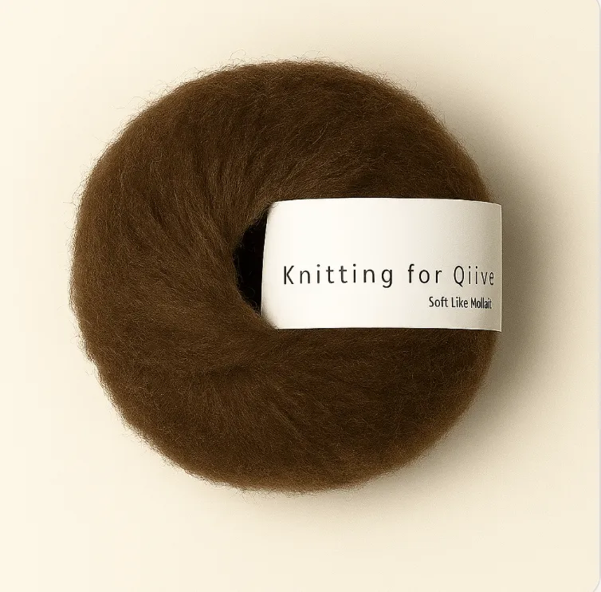
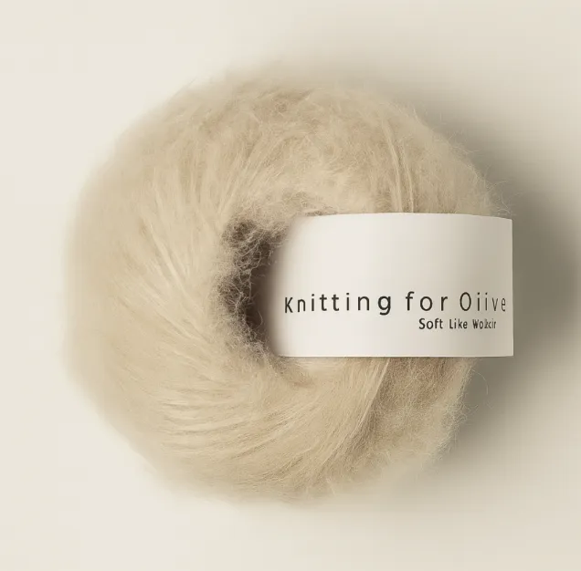
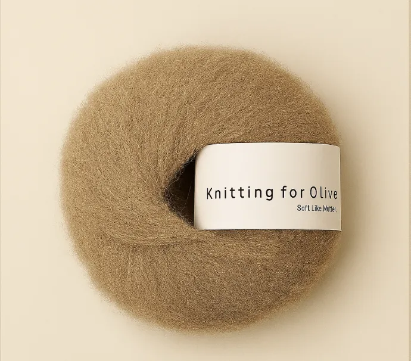
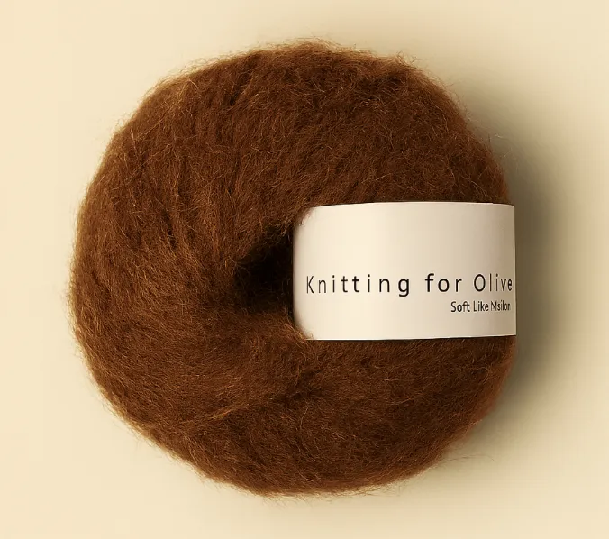
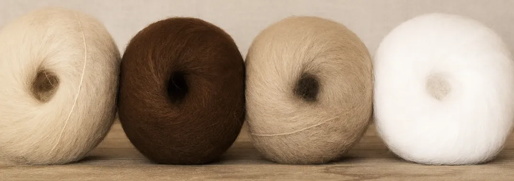
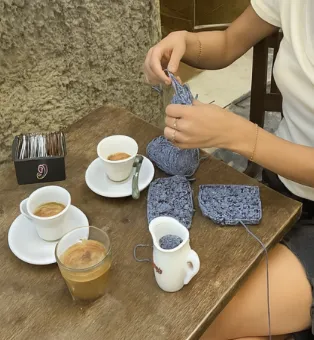
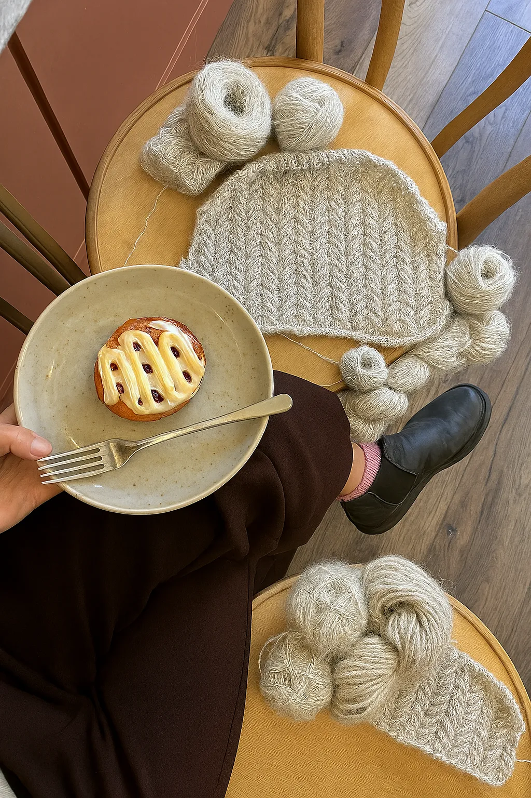
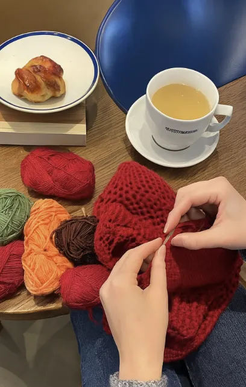

Garnets farver – inspiration og kombinationer
Garn er mere end tråd; det er et materiale, der åbner for kreativ udforskning i utallige former. Farverne er med til at skabe stemningen i ethvert projekt. Sarte pasteller giver et blødt og roligt udtryk, mens klare nuancer tilfører styrke og liv. Naturlige jordfarver bringer varme og enkelhed, og kontrasten mellem sort og hvid kan give et rent, moderne præg. Når du vælger farver, vælger du samtidig den følelse, dit strik skal udtrykke – om det skal være roligt, elegant, klassisk eller varmt og indbydende.
De hotteste efterårsfarver til dit strik
Efteråret bringer en palet af dybe, mættede farver, der giver strik et varmt og stemningsfuldt udtryk. Tænk på nuancer som mørkegrøn, marineblå og bordeaux, suppleret af gyldne toner som okker og rust. Samtidig er der plads til at lege med lysere og mere markante farver, som kan skabe spændende kontraster sammen med neutrale nuancer. Du kan også vælge klassiske striber, som giver et levende og tidløst udtryk, der holder sæson efter sæson.
Find dit farvematch, klik på din yndlings efterårsfarve og find ud af, hvilken farve der passer bedst til dig!





Hvad er en god efterårsfarve?
En god efterårsfarve er en, der afspejler årstidens ro og varme. Dybe, mættede toner som mørkegrøn, marineblå og bordeaux skaber en følelse af dybde og balance, mens varme nuancer som okker og rust giver et glødende udtryk, der passer perfekt til sæsonens lys og natur. Samtidig kan mere friske farver og bløde pasteller give et let modspil, især når de kombineres med neutrale toner eller bruges i farveblokke. Klassiske striber i efterårsfarver er også et sikkert valg, fordi de giver et tidløst, men stadig levende udtryk.
Strikkecafé & strikkehygge i butikken
Alle er velkomne hos Luneknit! Kom forbi, når det passer dig – tag dit strikketøj med, eller begynd på et nyt projekt, hvis du har lyst. Du kan også bare kigge ind, nyde stemningen, få en god snak og en kop kaffe sammen med andre strikkeglade. Omkring strikkebordet er der altid plads til både nybegyndere og erfarne. I løbet af ugen holder vi strikkecafé, hvor onsdag aften kræver tilmelding, mens der tirsdag formiddag og fredag eftermiddag er ekstra strikkehjælp til dig, der har brug for lidt støtte eller inspiration til dit projekt.
Vi holder åbent for strikkecafé onsdag aften kl. 17:30 - 21:00.
Strik er meget mere end bare garn – det er et sted, hvor vi mødes, lærer hinanden at kende og nyder en hyggelig aften sammen. Vores strikkecafé hver onsdag tiltrækker både faste deltagere og nye strikkere og hæklere, som måske ikke kender nogen i forvejen. Her er plads til alle, og fællesskabet har udviklet sig til et varmt og indbydende sted for strikkere og hæklere. Uanset om du lige er startet, eller har strikket i mange år, er du mere end velkommen i vores glade og rummelige selskab. Tag din ven eller veninde i hånden og kom forbi og hyg med! Glæder mig til vi ses.



Tirsdag formiddag og fredag eftermiddag
Du er altid velkommen til at sidde og strikke i butikken, men tirsdag formiddag og fredag eftermiddag har vi reserveret tid til ekstra strikkehygge. Det betyder ganske enkelt, at en af os fra Luneknit sidder med ved bordet, klar til at hjælpe med projekter, der driller, eller bare til at hygge og snakke sammen. Der er ingen tilmelding – kom som du er, og nyd stemningen.
Adresse: Ved Mølle 3, 2800 Gammelby